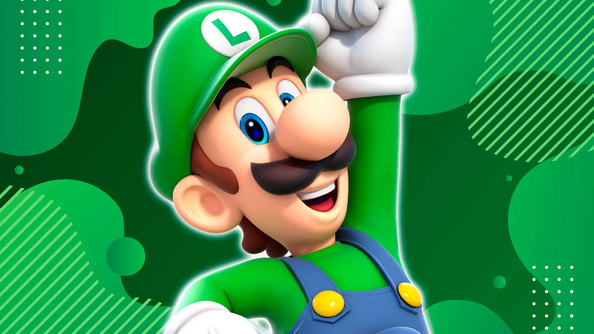

VIDEOJUEGO
Luigi en los Videojuegos
Luigi, el hermano de Mario, ha tenido un papel destacado en una amplia variedad de juegos a lo largo de los años. Aquí hay una lista de algunos de los juegos más importantes en los que ha aparecido:
1. Juegos de la Serie Principal de Mario
- Super Mario Bros. (1985): Luigi es jugable en el modo multijugador.
- Super Mario Bros.: The Lost Levels (1986): Luigi es jugable en el modo multijugador.
- Super Mario Bros. 2 (1988): Luigi es uno de los personajes jugables con habilidades especiales.
- Super Mario Bros. 3 (1988): Luigi es jugable en el modo multijugador.
- Super Mario World (1990): Luigi es jugable en el modo multijugador.
- Super Mario World 2: Yoshi's Island (1995): Luigi aparece en algunos niveles como personaje secundario.
- Super Mario 64 (1996): Luigi está en el juego, pero sólo es accesible a través de glitches o hacks.
- Super Mario Sunshine (2002): Luigi aparece en el juego como un personaje no jugable.
- Super Mario Galaxy (2007): Luigi se convierte en un personaje jugable después de completar el juego con Mario.
- Super Mario Galaxy 2 (2010): Luigi tiene un papel similar al de la primera entrega, siendo desbloqueable tras completar el juego.
- Super Mario 3D World (2013): Luigi es jugable con habilidades especiales en el modo multijugador.
- Super Mario Odyssey (2017): Luigi aparece en el juego, principalmente en el modo multijugador y el modo de fotografía.
2. Juegos de Luigi's Mansion
- Luigi's Mansion (2001): Luigi es el protagonista que explora una mansión encantada para capturar fantasmas y rescatar a Mario.
- Luigi's Mansion: Dark Moon (2013): Luigi regresa para capturar fantasmas y resolver misterios en diferentes mansiones.
- Luigi's Mansion 3 (2019): Luigi explora un hotel embrujado para salvar a sus amigos y liberar a Mario de un hechizo.
3. Juegos de Mario Kart
- Mario Kart 64 (1996): Luigi es un personaje jugable en el juego de carreras.
- Mario Kart: Double Dash!! (2003): Luigi aparece como un piloto en el juego de carreras.
- Mario Kart DS (2005): Luigi es un personaje jugable.
- Mario Kart Wii (2008): Luigi vuelve a ser un piloto en el juego.
- Mario Kart 7 (2011): Luigi está presente en el juego de carreras.
- Mario Kart 8 (2014) y Mario Kart 8 Deluxe (2017): Luigi regresa como piloto en estas entregas.
4. Juegos de Deportes y Party
- Mario Party Series: Luigi aparece como uno de los personajes jugables en casi todas las entregas de la serie.
- Mario Tennis Series: Luigi es un personaje jugable en todos los juegos de tenis de la serie.
- Mario Golf Series: Luigi es un personaje jugable en todos los juegos de golf de la serie.
- Mario & Sonic en los Juegos Olímpicos: Luigi es un personaje jugable en estos juegos de deportes.
5. Otros Juegos Destacados
- Luigi’s Mansion Arcade (2015): Un juego de arcade basado en Luigi’s Mansion.
- Super Smash Bros. Series: Luigi es un personaje jugable en todos los juegos de la serie Super Smash Bros., desde el original hasta el último.
- Dr. Mario Series: Luigi ha sido un personaje en algunos juegos de la serie, como Dr. Mario 64.
6. Juegos de Rol y Otros
- Mario & Luigi Series: Luigi aparece como personaje jugable en juegos como Mario & Luigi: Superstar Saga y sus secuelas.